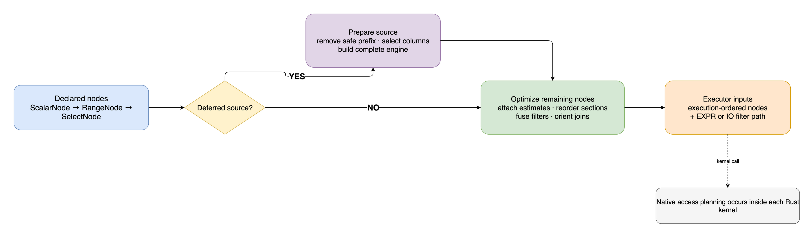
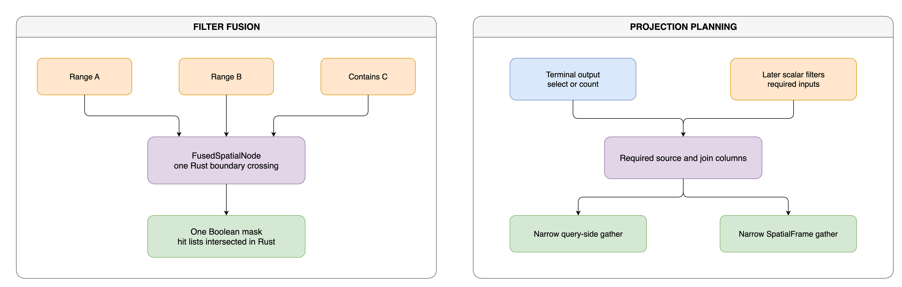

Spatial Query Planning
Logical nodes
Each SpatialLazyFrame method returns a new frame with one typed node appended. No work runs until
collect(), count(), collect_batched(), sink_parquet(), or another terminal operation asks
for a result.
For example:
result = (
places.lazy()
.filter(pl.col("category") == "park")
.range_query(-74.1, 40.6, -73.8, 40.9)
.select("name")
.collect()
)
records ScalarNode, RangeNode, and SelectNode in declaration order.
| Node category | Examples | Planning role |
|---|---|---|
| Scalar filter | filter() |
Polars expression that can move within a reorderable section |
| Spatial filter | range_query(), contains() |
Row-subset operation ordered by estimated selectivity |
| Nearest neighbour | knn() |
Result-shaping operation and planning barrier |
| Spatial join | within_join(), knn_join() |
Combines two inputs and forms a planning barrier |
| Output shape | select(), count() |
Determines which attributes must survive execution |
| Row bound | limit() |
Preserves result order and forms a barrier |
From declaration to execution

PyCanopy does not construct a separate physical-plan object. The executor receives an optimized,
execution-ordered list of the same typed nodes plus an EXPR or IO integration-path choice.
Materialized and deferred frames enter this process differently:
- A materialized frame already has its attributes, native geometry, and statistics, so its complete logical node list goes directly to the optimizer
- A deferred frame first removes a safe source prefix, materializes the required rows and columns, then optimizes the nodes that remain
The engine's native scan/index decision happens later, when a spatial kernel runs.
Ordering and barriers
The optimizer divides the node list at operations whose semantics depend on order. It sorts only within the sections between those barriers.
- Scalar filters run before spatial filters within a section
- Scalar expressions are ordered by a structural cost derived from their Polars expression tree
- Range and radius filters estimate selectivity from query area and dataset extent
- Containment and kNN estimate expected result size
- Spatial filters run from narrower to broader estimated results
- kNN, joins, self-joins, and limits remain in their declared position
These heuristics order operations. They do not choose a grid, KD-tree, R-tree, or scan.
Plan rewrites

Spatial filter fusion
Consecutive range and containment predicates may become one FusedSpatialNode. The executor then
makes one Rust call, and Rust intersects the intermediate hit lists before returning one Boolean
mask.
Fusion is skipped when the dataset is small or when a predicate is selective enough that applying it separately should reduce later work.
Projection planning
A terminal select() or count() determines which attributes must survive:
- Join gathers retain requested output columns and columns read by later scalar filters
- Deferred sources retain only source-side columns required by the remaining plan
count()requests no output attributes, though filters and geometry can still require input columns
Join orientation
Python and Rust make orientation decisions at different scopes:
- The Python optimizer can flip supported symmetric joins based on the two side sizes
- Native point-to-polygon distance planning can compare the declared direction with building a grid over the point side
- Joins without a safe reverse kernel keep their declared orientation
Polars integration path
After optimization, PyCanopy selects how non-join spatial filters reconnect to Polars rows:
EXPRkeeps the work in a Polars lazy chain and passes surviving original-row indices to RustIOqueries the complete engine first, gathers the matching rows, then applies scalar filters- Joins use dedicated join execution rather than this filter-path choice
- kNN has its own scalar-aware behavior: it scans prior scalar survivors when present and otherwise queries the complete engine
The next page follows these routes through the executor.